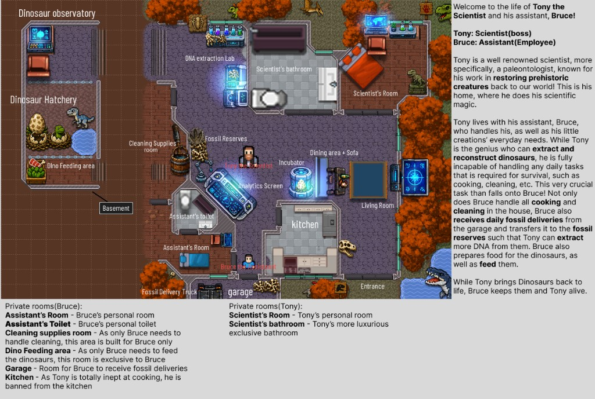
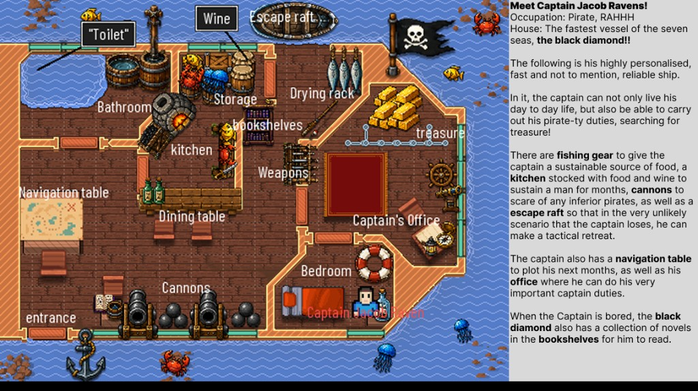
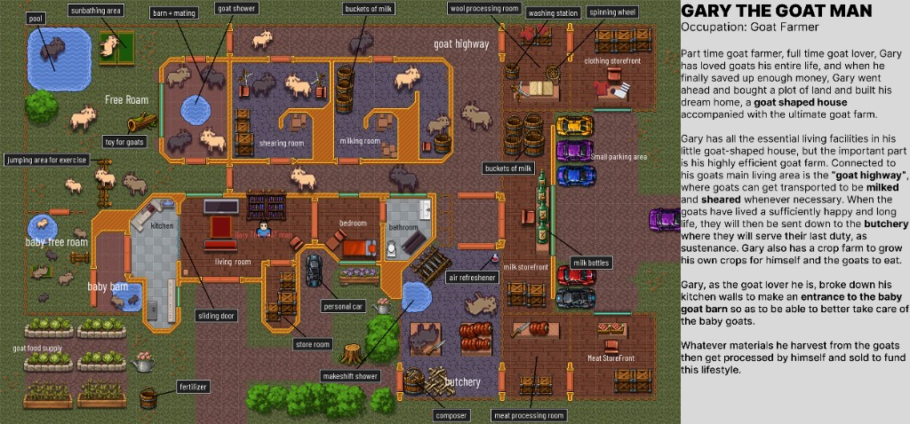
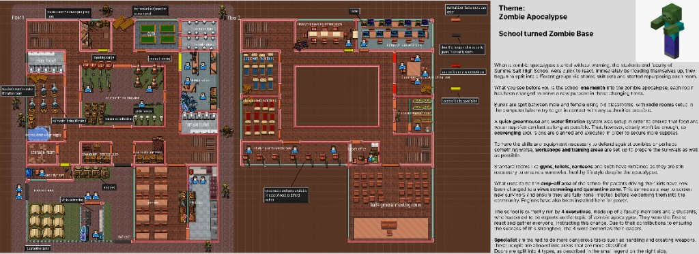

RPG Maker maps
Four house maps, built the same way: decide who lives there, then lay out the rooms so the map shows it without any labels.
- Role
- Solo level design
- Course
- CSD2541
- Timeline
- 3 May – 31 May 2026
- Format
- RPG Maker house maps
- Count
- 4 maps
- Art
- Purchased tileset; layout mine
Each map starts from a story about who lives there, and the rooms exist to support what they do. Just by looking at the layout, you should be able to tell who lives there and what they do all day. The tileset was purchased. The layout, the choice of rooms, and how the rooms connect are mine.
These maps sit beside the campaign ONE million. The Black Diamond is the same captain's ship, drawn as a house map.
Tony and Bruce |
The Black Diamond |
Gary the Goat Man |
Sunrise Call High
How I built each map
- Start with who lives there and what they do all day.
- List the rooms that job needs, and nothing more.
- Chain those rooms in the order the work happens. That chain is the backbone of the map.
- Decide who is allowed where: private, shared, or restricted.
- Place rooms by how often they are used. Daily rooms sit near where the person sleeps or works; deliveries and visitors stay at the edge.
What the four share
Each map has one main route, with side rooms branching off it. The test is whether a stranger could spot that main route just by looking at the map.
| Map | Theme | Main route | What the layout has to show |
|---|
| Tony and Bruce | Scientist who cannot run a house | Two wings, two jobs | Lab work never has to pass through the kitchen |
| The Black Diamond | Solo pirate, no town | One short loop around the deck | He can eat, fight, plan, sleep, and leave |
| Gary | A house built for goats | Goat highway, then storefronts | People fit around the animals, not the reverse |
| Sunrise Call High | A school reused as a base | Each school wing keeps its shape but gets a new job | Every wing clearly reads as rest, food, defence, or command |

Tony and Bruce
Two jobs, two wings.
Tony extracts DNA and rebuilds dinosaurs. He cannot cook, clean, or run a household. Bruce keeps both of them alive. The house keeps those two jobs apart, and that is the core of the layout. A mad-scientist premise only works if the assistant's work actually shapes how the house is laid out, instead of being a joke in the corner.
How it connects
The house runs on one chain. The fossil truck unloads at the garage. Bruce carries the fossils to the fossil reserves. Tony pulls them into the analytics screen and the DNA extraction lab, the embryo goes into the incubator, and the hatchling ends up in the basement hatchery, where Bruce feeds it in the dino feeding area. Each room sits beside the step before it, so nobody has to backtrack across the house.
Food runs on a second, shorter loop: kitchen straight to the dining area. It stays on Bruce's side and never touches the lab.
Who can go where
Tony is the boss and Bruce is the employee, and the plan says so through access. Most of the house belongs to one person's job. There is exactly one hand-off point between them.
| Room | Who | Why |
|---|
| Scientist's room and bathroom | Tony only | Private. The bathroom is the more luxurious of the two. |
| Lab, analytics, incubator, hatchery, observatory | Tony's work | Where the dinosaurs get made. |
| Fossil reserves | Both | The hand-off. Bruce stocks it, Tony draws from it. |
| Kitchen | Bruce only | Tony is so bad at cooking that he is banned. |
| Garage, cleaning supplies, dino feeding area | Bruce only | Deliveries, cleaning, and feeding are only ever Bruce's jobs. |
| Assistant's room and toilet | Bruce only | Private. |
| Living room, dining area | Both | Shared home space. |
The kitchen ban is the easiest rule to read on the map. One closed door says more than a sign: Tony's work and Bruce's daily chores never share a hallway, so the layout shows how much Tony depends on Bruce without needing a label.
Placement
Bruce's rooms cluster at the bottom left, around the garage, the cleaning supplies, and the fossil reserves. Everything he handles every day is a few steps from his bed. Tony's bedroom and bathroom sit at the top, right beside the DNA lab, so he goes from sleeping to working without passing through Bruce's side.
The kitchen sits in the middle, between Bruce's side and the dining area, so food reaches the table without anyone crossing the lab. The front entrance opens onto the living room, away from the lab and the basement. The hatchery lives in the basement, where the dinosaurs have room and stay out of the house.

The Black Diamond
A pirate who lives alone on a self-sufficient ship. Same captain as ONE million.
Jacob lives on the ship. There is no town. Food, weapons, planning, sleep, and an escape route all have to fit on one ship, or he cannot survive at sea. That constraint is the design. The map is not just decoration; it shows that the captain can actually live this way before the campaign even starts.
How it connects
Food is a full loop on board. Fishing gear and the drying rack supply fish, storage holds food and wine for months, the kitchen cooks, and the dining table sits right in front of the kitchen. Fighting happens at the entrance: the cannons line the deck beside the boarding point, where an attack would actually come from. Planning has two stations, the navigation table on the open deck for routes and the captain's office for everything else. The escape raft hangs off the edge of the deck, the way out if he ever loses.
Who can go where
Jacob is the only person on board, so access here is about exposure rather than permission. The left half is the working deck: entrance, cannons, navigation table, kitchen, and dining table. The right half sits behind walls: the captain's office, the treasure, and the bedroom. Anyone who boards meets cannons first and has to cross the whole working deck before reaching the gold.
Placement
The treasure sits between the office and the bedroom, the two rooms where he spends the most time, so it is never out of reach. The weapons rack and bookshelves sit in the middle of the ship, a few steps from everything. The ship is small on purpose. Every station is within a few steps, which is what "fast and reliable" means for someone sailing alone.

Gary the Goat Man
The goats' daily routine is the main route. Human rooms branch off it.
Gary is a goat farmer who built a goat-shaped house on a goat farm. The joke is the layout itself: the animals' path comes first, and people fit around it. If the living room were the centre, it would be a normal farmhouse with goats as decoration, which is exactly what I was trying to avoid.
How it connects
The goat highway runs along the top of the farm and links every stage of a goat's life in order: free roam (pool, sunbathing area, jumping area, toys), the barn and mating area, the goat shower, shearing, milking, and finally the butchery.
Each stage feeds a processing room and then a storefront. Wool goes through the wool processing room (washing station, spinning wheel) to the clothing storefront. Milk goes to the milk storefront. Meat goes through the meat processing room to the meat storefront. Outside, crops, the goat food supply, fertilizer, and a composter close the loop, so what the farm throws away grows the next round of feed.
Who can go where
Three groups use this map: goats, Gary, and customers. Goats stay on the highway and in the free-roam areas. Customers only need the storefronts, so all three sit on the right edge next to the small parking area: they park, buy, and leave without entering the house or the farm. Gary is the only one who crosses between all three zones. Baby goats get their own free-roam area and barn on the left, apart from the adults.
Placement
Gary's own rooms (kitchen, living room, bedroom, bathroom, store room, and a spot for his car) sit in the middle, surrounded by the work. He broke down part of the kitchen wall and put in a sliding door to the baby barn, so he can look after the kids while he cooks. The butchery sits at the bottom, away from the free-roam areas, with a makeshift shower and an air freshener between it and the living rooms.

Sunrise Call High
A school that still reads as a school, reused as an outbreak base.
Students and faculty stay on campus and divide the work by skill. I did not just turn it into a bunker. The gyms, toilets, canteen, classrooms, and drop-off area keep their original shape but take on new jobs. Point at any wing and you should be able to tell whether it is for rest, food, defence, or command.
How it connects
The map shows the school one month into the outbreak, across two floors. Floor 1 is where people arrive and work. The entrance leads into virus screening and the quarantine zone, which used to be the parent drop-off, with a security room beside it and engines installed there for power. Past screening are the training areas (shooting range and workshops), the gym, storage, water filtration, and the canteen and kitchen.
Floor 2 is where people live and decide. Old classrooms become bunks, split into male and female. The computer labs become radio rooms for trying to reach any authorities still out there. The greenhouse sits up here, along with the executives' office and the hall, which is now the general meeting room.
Who can go where
The base is run by four executives: two faculty members and two students who happened to know a lot about zombie apocalypses and were the first to organise everyone. Specialists take on the dangerous jobs, such as making and handling weapons, so they are allowed into more classified rooms. I split the doors into four types and colour-coded them, so the plan shows the hierarchy on its own.
| Door | Who gets through |
|---|
| Normal | Everyone |
| Guarded | Whoever the guard in the security room lets through |
| Executive | The four executives only |
| Specialist | Specialists (weapons and other dangerous work) |
Placement
New survivors cannot reach the living areas before they are cleared: screening and quarantine sit right at the entrance on the ground floor, and the bunks are a floor up. Weapons sit behind specialist doors in isolated side rooms, so the arsenal is not the living room. Everyday rooms like the gyms, toilets, and canteen stay what they were, because people still need a halfway healthy routine in the middle of an apocalypse.
Keeping the school recognisable is what makes the reuse believable. A base that erases the building is just a bunker with lockers. A base that gives each part of the school a new job still tells you where you are.
Role
- Theme, room planning, and how rooms connect · all four maps
- Tileset purchased; layout designed by me
← Back to Projects